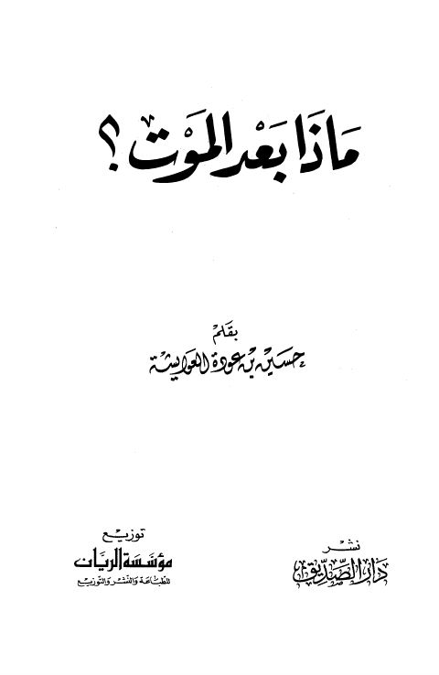

Downloads need an internet connection.
ماذا بعد الموت؟
Authors: حسين بن عودة العوايشة
Publishers: مؤسسة الريان دار الصديق ببيروت
**▫️ العنوان: ماذا بعد الموت؟ ** ▪️ المؤلف: #حسين_بن_عودة_العوايشة ▫️ الناشر: #دار_الصديق • #مؤسسة_الريان ▪️ بلد النشر: بيروت، #لبنان ▫️ الطبعة: 1 ▪️ عدد الأجزاء: 1 ▫️ الصفحات: 185 ▪️ نوع الوعاء: #كتاب ▫️ التصنيف الرئيسي: #العقيدة_والمذاهب_والأديان ▪️ التصنيف الفرعي: #التوحيد ۪